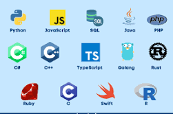
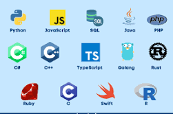

.jpg)

What is computer programming
Computer programming or coding is the composition of sequences of instructions, called programs, that computers can follow to perform tasks. It involves designing and implementing algorithms, step-by-step specifications step-by-step specifications of procedures, by writing code in one or more programming languages.
there are a lots of field in computer programming
They include:
- Web Developer
- Mobile App Developer
- Information Security Analyst
- Data science
- Software engineering
- Database Administrator
- Software Developer
- Computer programmer
- User experience design
- Web Developer:
- Mobile App Developer
- Information Security Analyst
- Data science
- Software engineering
- Database Administrator
- Software Developer
- Computer programmer
- User Experience Design
A web developer is a programmer who develops World Wide Web applications using a client–server model. The applications typically use HTML, CSS, and JavaScript, in the client, and any general-purpose programming language in the server. HTTP is used for communications between client and server.
Web Developer. Not only do web developers write the code for websites, they also design the look of the site so that is both visually appealing and user
Web Developer. Web developers build and maintain websites. A web developer works with code daily. They write in various programming languages
Web Developer. Web developers use coding and design skills to create and maintain websites and applications.
Mobile App Developer. These professionals specialize in creating software applications for mobile devices like smartphones and tablets.
Mobile App Developer. Mobile App Developers are similar to Web Developers, except their area of expertise is creating, coding, and testing for mobile
Mobile App Developer. There are more than seven million mobile apps available on iOS and Android devices as of 2023.
Information Security Analyst. Information security analysts protect an organization's computer networks and systems.
Information Security Analyst. Information Security Analysts are in charge of implementing systems of safety and protecting a company's computer networks
An information security analyst is a professional who creates and implements data security plans on behalf of a company or multiple companies
Information Security Analyst. Information security analysts focus on protecting sensitive information and systems from cyber threats and security breaches.
Data science is an interdisciplinary academic field that uses statistics, scientific computing, scientific methods, processing, scientific visualization, algorithms and systems to extract or extrapolate knowledge and insights from potentially noisy, structured, or unstructured data.
Data scientist. Data scientists are in demand across a range of industries for their skills in leveraging data to help drive business decisions.
Software engineering is an engineering approach to software development. A practitioner, called a software engineer, applies the engineering design process to develop software. The terms programmer and coder overlap software engineer, but they imply only the construction aspect of typical software engineer workload.
Software engineering focuses on using engineering approaches to the theory and practice of building software systems.
A software engineer builds, maintains and improves software and networks with extensive coding, engineering and software development knowledge.
Database Administrator. Database administrators manage and maintain databases within organizations.
Database administrator. Database administrators are like digital librarians.
Software Developer. Software developers are responsible for designing, developing and maintaining software applications that meet specific user needs.
Software Developer. Software developers design computer applications and operating systems.
Computer Programmer. A computer programmer writes code to create software programs that can be used for countless applications.
Computer Programmer. These professionals are responsible for creating the code that enables applications and programs to run smoothly and effectively.
Computer Programmer. Computer programmers create computer applications and software.
Computer programmer. Computer programmers write programs and rewrite programs until they are free of errors.
User experience design, upon which is the centralized requirements for "User Experience Design Research", defines the experience a user would go through when interacting with a company, its services, and its products.
UX designer. User Experience (UX) Designers are like the architects of the digital world.
UX Designer. These designers are responsible for creating digital products and services that are easy to use.
UX Designer. UX Designers are in charge of creating significant and relevant experiences for users of a particular product or platform.
Programming languages
.jpg) 

.jpg)
.jpg)
.jpg)
A programming language is a system of notation for writing computer programs.
Programming Languages are described in terms of their
syntax (form) and semantics (meaning),
usually defined by a formal language. Languages usually provide features
such as a type
system, variables, and mechanisms for error handling. An implementation
of a programming
language is required in order to execute programs, namely an interpreter
or a compiler.
An interpreter directly executes the source code, while a compiler
produces an executable program.
History
Early developments
The first programmable computers were invented at the end of the 1940s, and with them, the first programming languages. The earliest computers were programmed in first-generation programming languages (1GLs), machine language (simple instructions that could be directly executed by the processor). This code was very difficult to debug and was not portable between different computer systems.[12] In order to improve the ease of programming, assembly languages (or second-generation programming languages—2GLs) were invented, diverging from the machine language to make programs easier to understand for humans, although they did not increase portability.[13]
Initially, hardware resources were scarce and expensive, while human resources were cheaper. Therefore, cumbersome languages that were time-consuming to use, but were closer to the hardware for higher efficiency were favored. The introduction of high-level programming languages (third-generation programming languages—3GLs)—revolutionized programming. These languages abstracted away the details of the hardware, instead being designed to express algorithms that could be understood more easily by humans. For example, arithmetic expressions could now be written in symbolic notation and later translated into machine code that the hardware could execute.[13] In 1957, Fortran (FORmula TRANslation) was invented. Often considered the first compiled high-level programming language, Fortran has remained in use into the twenty-first century. 1960s and 1970s.
Two people using an IBM 704 mainframe—the first hardware to support floating-point arithmetic—in 1957. Fortran was designed for this machine.[17][16] Around 1960, the first mainframes—general purpose computers—were developed, although they could only be operated by professionals and the cost was extreme. The data and instructions were input by punch cards, meaning that no input could be added while the program was running. The languages developed at this time therefore are designed for minimal interaction. After the invention of the microprocessor, computers in the 1970s became dramatically cheaper. New computers also allowed more user interaction, which was supported by newer programming languages.
.png)
.jpg)
.png)
.png)
.png)
.png)